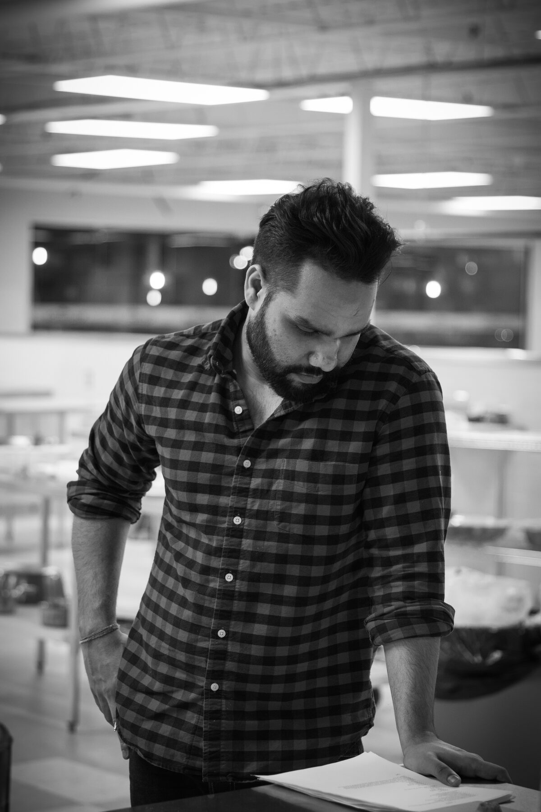

Before it became a technology platform, Nutrics was a prepared-meal business in the Toronto region. Today’s model is built on what running it taught us.

Founder & CEO
A technology founder with firsthand food-operations experience.
15 years building and shipping production software. Built the current Nutrics MVP, personalization engine and platform.
Built and operated Nutrics V1 in 2017–2018, a prepared-meal business in the Toronto region with paid customer orders, weekly menus, a culinary team led by a Head Chef, online ordering and recurring delivery.
Personalized nutrition is not only a recommendation problem. It is also an execution problem: the food has to match changing customer needs, stay interesting, be produced consistently and reach the customer reliably.
After years of further technology and product work, Amrit returned to Nutrics in 2026 to rebuild it around a nutritional intelligence layer, distributed food partners and structured fulfillment.
Weekly menus in Regular, Low Carb and High Protein variants, ordered online and delivered across the GTA.
An intelligence layer plans the meals, local food partners prepare them, and structured fulfillment gets them to the door. Toronto launch planned for January 2027.
Nutrics has a solo founder today. These are the first roles planned as we move toward launch.
Nutrition framework, macro logic, recipe standards and food-partner validation.
Receiving, consolidation, cold-chain process, quality control and dispatch.
Partner pickups, routing, last-mile coordination and delivery reliability.